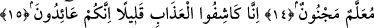
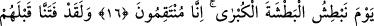
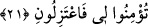

ONLARDA
ÖĞÜT ALMAK NEREDE?
13. Artık onlar nasıl düşünüp öğüt alacaklar (öğüt alma zamanı geçti)? Oysa
kendilerine apaçık bir elçi gelmişti.
14. Ondan yüz çevirdiler: ”Bu, öğretilmiştir, cinlenmiştir” dediler.
15. Biz sizden azâbı birazcık kaldırırız, ama siz yine (inkârınıza) dönersiniz.
16. O gün büyük vuruşla vururuz; zîrâ biz öc alıcıyız!
17. Andolsun, onlardan önce Firavun toplumunu da (imkânlar vererek) sınadık.
Onlara değerli bir elçi geldi, (şöyle diyerek):
18. ”Allâh’ın kullarını bana teslîm edin; çünkü ben sizin için güvenilir bir
elçiyim.”
19. ”Allah’a karşı ululanmayın. Ben size apaçık bir delîl getiriyorum.”
20. ”Ben, beni taşla(yıp öldür)menizden, benim de Rabbim, sizin de Rabbiniz
olan(Allâh)a sığındım.”
21. ”Eğer bana inanmadınızsa bari ben(im yolum)dan çekilin.”
Artık onlar nasıl düşünüp öğüt alacaklar (öğüt alma zamanı geçti)? Bu ifâde onların
sözünü ve azâbın kaldırılması konusundaki taleplerinin reddi mâhiyetindedir. Aynı
zamanda başlarına gelen bu belâlardan dolayı düşünüp öğüt alarak îman edeceklerini
bildiren sözlerini yalanlamaktadır. Âyetteki soru ifâdesinden murâd ise gerçek mânâda
olmayıp, bu durumun gerçekleşmekten pek uzak olduğunu ifâde içindir. Bu husus gâyet
açıktır. Yani nasıl yahut nereden düşünüp öğüt alacaklar ki, gûyâ kendilerinden azab
kaldırıldığında îman edecekleri sözünü veriyorlar, demektir.
“Oysa kendilerine apaçık bir elçi gelmişti” Yani onlar, kendilerini düşünmeye dâvet
eden nice durumlara ve öğüt almalarına sebep olabilecek nice hâdiselere şâhid